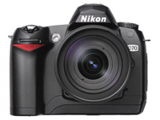

Nikon of Canon: opgelost!
vrijdag 7 januari 2005 | Gadgets
Ik kreeg deze middag een telefoontje van mijn moeder. Ze bevond zich bij de fotograaf en stond op het punt een nieuwe digitale camera te kopen. Haar Nikon 5400 had uitstekend gediend, maar de zoom liet toch wat te wensen over. Een 4x deed het gewoon niet voor haar.
Ik had haar de dag ervoor de Canon Powershot G6 aangeraden, de opvolger van de oerdegelijke en zeer populaire G5. Met een speciale voorzetlens zou ze een 27-200mm kunnen nabootsen. Toch al behoorlijk wat! Nu hadden ze die speciale lens natuurlijk niet op voorraad. Jammer...

Maar wat ze toen deed, zal een grote impact blijven hebben op mijn toekomstig leven als amateur fotograaf. Ze keek door het oculair van de Nikon D70 met een Tamron AF28-300MM zoomlens...Zo komt het dat hier vanavond, naast mij, een apparaat ligt waar ik al maanden wakker van lig. Nuja, niet in het bijzonder van de D70, maar toch met de vraag of ik al dan niet in zee zou gaan met digitale reflextoestellen. Die zijn heel wat zwaarder en groter (en vooral ook duurder), maar bieden oneindig veel meer creatieve mogelijkheden dan compactcamera's. Om nog niet te spreken van de magische wereld van lenzen die nu voor mij opengaat. En lenzen... die gaan een leven lang mee, zelfs al koop je later een ander toestel.
De keuze tussen Nikon of Canon is allesbehalve evident. Beide hebben hun kleine en grote voor- en nadelen. Maar kies je ooit één van de twee, dan is een weg terug heel pijnlijk (financieel gezien dan). Lenzen van Canon passen immers niet op Nikon, en omgekeerd. Een goede vriend-fotograaf van mij, Rollin Verlinde, gaf me uiteindelijk de beste raad: “Alle moderne toestellen zijn kwalitatief uitstekend. Het is de gebruiker die de doorslaggevende factor vormt voor een geslaagde foto.” Wijze woorden.
Mijn moeder maakte haar keuze tussen de Canon EOS 300D en de Nikon D70, twee professionele camera's, min of meer aan elkaar gewaagd. Ik heb haar hierin volledig vrij gelaten, maar stilletjes besefte ik dat haar beslissing voorgoed een einde zou maken aan mijn inmiddels twee jaar oude twijfels.
Ik mag natuurlijk niet doen alsof het mijn toestel is — ik heb immers geen euro betaald — maar dat ik er af en toe mee zal mogen spelen, dat staat zo goed als vast. Nietwaar, mamaatje? ;-)
Stijn op 8 januari 2005
Proficiat met de D70. Ik kan u uit eigen ervaring zeggen dat het een zeer degelijk toestel is en dat je er zeer zeker veel plezier aan zult beleven!